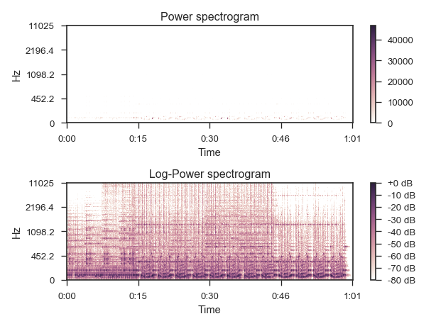

librosa.core.logamplitude¶
-
librosa.core.logamplitude(S, ref_power=1.0, amin=1e-10, top_db=80.0)[source]¶ Log-scale the amplitude of a spectrogram.
Parameters: - S : np.ndarray [shape=(d, t)]
input spectrogram
- ref_power : scalar or function
If scalar, log(abs(S)) is compared to log(ref_power).
If a function, log(abs(S)) is compared to log(ref_power(abs(S))).
This is primarily useful for comparing to the maximum value of S.
- amin : float > 0[scalar]
minimum amplitude threshold for abs(S) and ref_power
- top_db : float >= 0 [scalar]
threshold log amplitude at top_db below the peak:
max(log(S)) - top_db
Returns: - log_S : np.ndarray [shape=(d, t)]
log_S ~= 10 * log10(S) - 10 * log10(abs(ref_power))
See also
Examples
Get a power spectrogram from a waveform
y>>> y, sr = librosa.load(librosa.util.example_audio_file()) >>> S = np.abs(librosa.stft(y)) >>> librosa.logamplitude(S**2) array([[-33.293, -27.32 , ..., -33.293, -33.293], [-33.293, -25.723, ..., -33.293, -33.293], ..., [-33.293, -33.293, ..., -33.293, -33.293], [-33.293, -33.293, ..., -33.293, -33.293]], dtype=float32)
Compute dB relative to peak power
>>> librosa.logamplitude(S**2, ref_power=np.max) array([[-80. , -74.027, ..., -80. , -80. ], [-80. , -72.431, ..., -80. , -80. ], ..., [-80. , -80. , ..., -80. , -80. ], [-80. , -80. , ..., -80. , -80. ]], dtype=float32)
Or compare to median power
>>> librosa.logamplitude(S**2, ref_power=np.median) array([[-0.189, 5.784, ..., -0.189, -0.189], [-0.189, 7.381, ..., -0.189, -0.189], ..., [-0.189, -0.189, ..., -0.189, -0.189], [-0.189, -0.189, ..., -0.189, -0.189]], dtype=float32)
And plot the results
>>> import matplotlib.pyplot as plt >>> plt.figure() >>> plt.subplot(2, 1, 1) >>> librosa.display.specshow(S**2, sr=sr, y_axis='log', x_axis='time') >>> plt.colorbar() >>> plt.title('Power spectrogram') >>> plt.subplot(2, 1, 2) >>> librosa.display.specshow(librosa.logamplitude(S**2, ref_power=np.max), ... sr=sr, y_axis='log', x_axis='time') >>> plt.colorbar(format='%+2.0f dB') >>> plt.title('Log-Power spectrogram') >>> plt.tight_layout()
